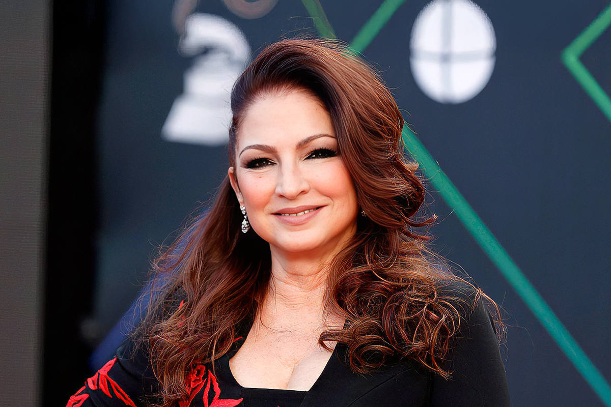
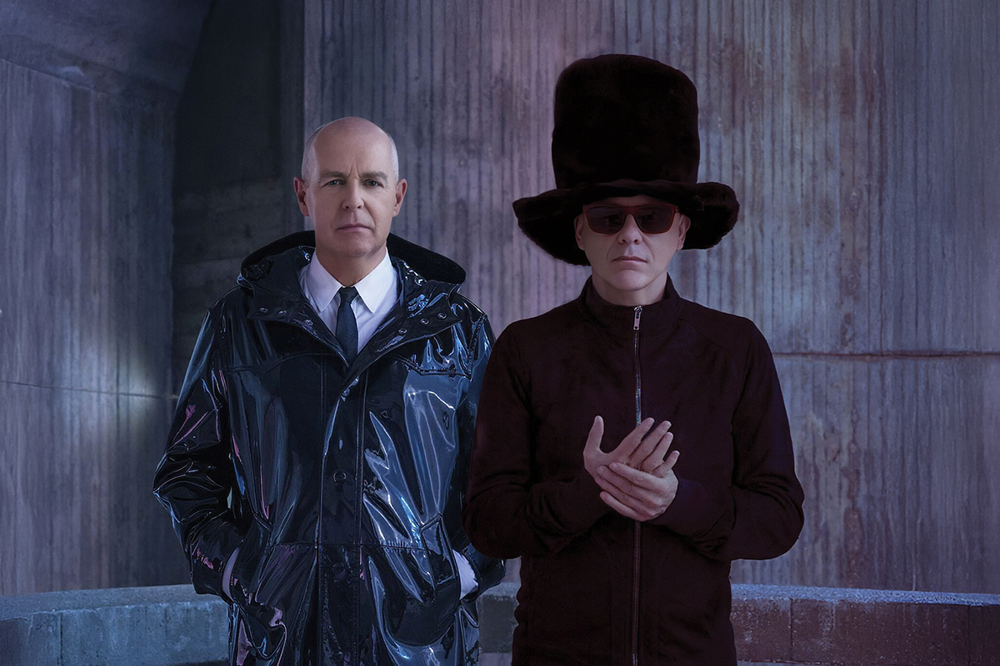

Festival de Viña 2026: ¿el mejor cartel de la última década?
Diversidad musical, regresos esperados y debuts históricos marcan esta edición
Diversidad musical, regresos esperados y debuts históricos marcan esta edición

No creo estar tan alejada de la opinión popular (y especializada) cuando digo con toda la confianza del mundo que el cartel que se propuso para el Festival de Viña del Mar para este año debe ser de los mejores de los que se tiene registro.
Y cuál podría ser una de las virtudes que hacen este line-up fantástico, se preguntarán ustedes. Bueno, que hace años no se veía un grupo de artistas tan ecléctico, diverso y, si no es en la cima de sus carreras, al menos con una trayectoria más que consagrada, no solo a nivel latinoamericano, sino mundial.
Ahora, como siempre, bueno es dar una repasada rápida a algunos de los artistas que pisarán la Quinta Vergara en su formato 2026 para que, al igual que muchos de nosotros, puedas formar tu opinión sobre la parrilla musical que disfrutaremos desde el 22 al 27 de este mes.

Hablemos de iconos hispanohablantes y sus representantes absolutos de la música latina.
Con una carrera musical que supera los 50 años y con más de 130 millones de álbumes vendidos en todo el mundo, la cubana Gloria Estefan es una de las voces destacadas dentro de la escena de la salsa y el pop latino.
Estefan es una artista potentísima, de una fama indiscutida y con una vigencia que sorprende y, a pesar de haber pisado hace más de 40 años el escenario de la Quinta, Gloria es una de las cantantes más recordadas en el país. Es que tengo plena seguridad de que cada persona en Latinoamérica ha escuchado alguna vez uno de sus numerosos hits.
La figura de Estefan sigue vigente, y es el número perfecto para dar el pie inicial a esta nueva edición del Festival.

Leyendas vivientes, referentes de la música, sonido inconfundible.
El dúo británico de synth pop, compuesto por Neil Tennant y Chris Lowe, y que tan popular fue en la década de los 80 y 90, regresa a Chile no solo con un show en Viña del Mar, sino que agendando otro evento en el Movistar Arena.
Pet Shop Boys, navegando en récords y acostumbrados a las millones de copias vendidas, será el plato anglo de la edición 2026 del festival, sección que siempre es muy esperada por el “Monstruo”.
Con hits universales como “It’s a Sin”, “West End Girls”, “Domino Dancing” y “Always on my Mind”, los oriundos de Londres prometen dar pie a una noche inolvidable.
Otro de los platos fuertes viene de una tremenda intérprete nacional. Mon Laferte vuelve al escenario de su natal Viña del Mar por tercera vez para presentarse con una discografía más que consolidada.
Lo de Mon Laferte dejó de ser un tema de conversación entre los críticos hispanohablantes; ahora sus últimos trabajos han logrado llegar a la esfera internacional. Ya sabes que lograste el éxito internacional cuando el lenguaje deja de ser un impedimento para los críticos o periodistas musicales.
La cantante chileno-mexicana tiene una fanaticada apasionada que la sigue a todos lados, y con su último álbum, Femme Fatale (2025), ya demostró sobrepasar las barreras del nicho en español.
Su música, que oscila entre una gran variedad de géneros donde se incluyen el pop, el rock, el bolero y la ranchera, será un indispensable dentro del Festival 2026.
Este es el debut del K-pop en el escenario de la Quinta Vergara. NMIXX visitó el año pasado el Festival de Viña como invitadas especiales del certamen.
Las chicas, instruidas sobre el fenómeno latinoamericano que es este festival, ya habían comentado que uno de sus sueños era ser parte del cartel de estas fechas. Bueno, el 2026 es el año en que ese sueño se hace realidad.
El sexteto surcoreano es reconocido por sus increíbles voces y su ecléctico sonido, que suele mezclar distintos géneros. Aunque su trabajo actual se aleja de este estilo de combinar diferentes sonidos en sólo una canción, siguen siendo un grupo que experimenta en cada uno de sus álbumes.
Con la llegada del grupo al festival, cabe preguntarse si el certamen finalmente está listo para expandir definitivamente sus horizontes a otros géneros musicales, sobre todo con uno tan exitoso como ha demostrado ser el K-pop.
El joven argentino de la nueva escena urbana aparece como una voz sensible dentro del género.
Milo J todavía no llega a los 20 años, pero desde los 15 ya está haciendo ruido en su natal Argentina, pero también dentro de Latinoamérica.
Mezclando las rimas del hip-hop con letras sentidas, narradas desde la experiencia propia y de sus compatriotas, Milo J se animó también a jugar con otros géneros, siendo uno de los más reconocidos en folclore, alejándose así de lo que muchos de sus compañeros de estilo tienden a proyectar en su sonido.
Uno de los rasgos más distintivos de su carrera ha sido su capacidad para moverse entre lo masivo y lo más íntimo, ya que puede viralizarse en plataformas digitales, pero también sostener una propuesta artística mucho más ligada a la reflexión, acercándose a la canción de autor contemporánea.
El último álbum del cantante, La Vida era más Corta, se ha llevado todos los aplausos de la crítica y es el trabajo perfecto que demuestra su capacidad para difuminar lo urbano con lo emotivo.
Ahora que te mostramos algunos artistas que aportan a este diverso cartel del 2026, ¿qué esperas ver en esta nueva edición del certamen?
 Cultura
CulturaSé que suena raro hablar de calor extremo mientras en Chile todos están buscando la parka más gruesa del clóset.
 Cultura
CulturaEl hecho de que estemos entrando al mes de julio no se puede creer. Pero lo que tampoco se puede creer es la cantidad de artistas que han…
 Cultura
CulturaCuando hablamos de trabajos clásicos de la música chilena, siempre se nombran los discos de Violeta Parra, Víctor Jara, Los Jaivas o…